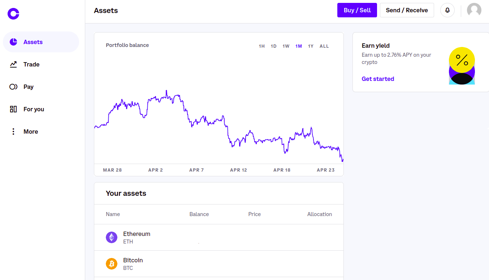
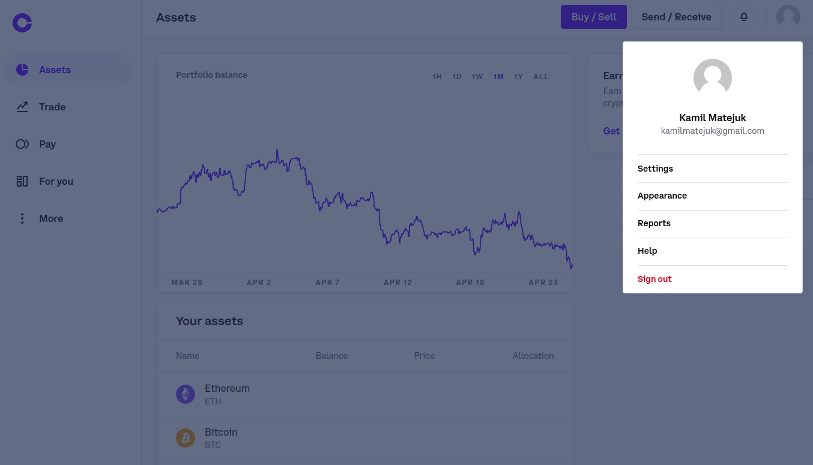
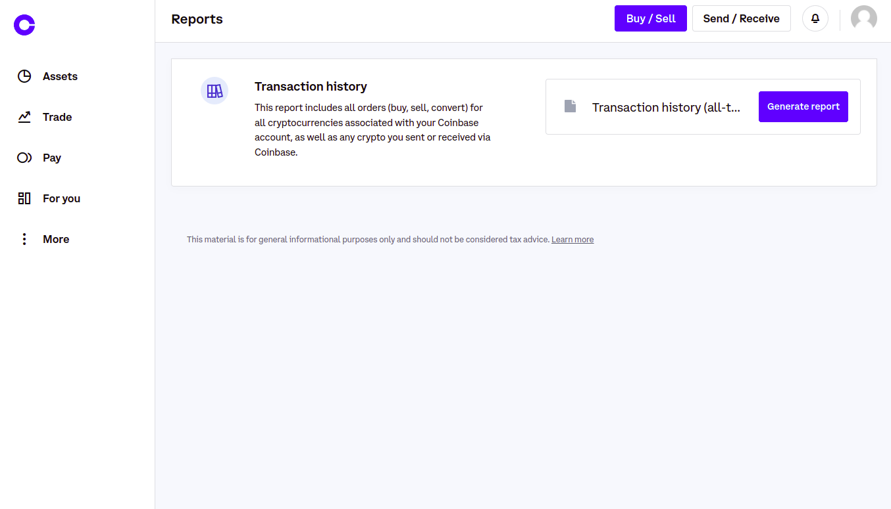
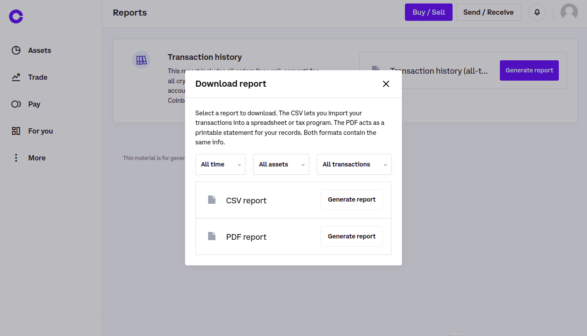

Kalkulator Podatków Dochodowych
z Coinbase © *
* Poniższa stronie nie jest w żaden sposób powiązana ani wspierana przez Coinbase Global Inc., jest jedynie personalnym projektem użytkownika, który zmęczył się manualnym liczeniem podatków.
Wgraj pliki
FAQ
Skąd i jak pobrać odpowiednie pliki?
Aby wyliczyć dane podatkowe, nawet tylko dla ostatniego roku podatkowego, ważna jest cała
historia transakcji od początku aktywności konta.
Można ją pobrać z poziomu swojego konta.
Następnie należy wgrać pobrany plik.
Pobieranie ze strony internetowej:
1. Zaloguj się na swoje konto Coinbase
2. Kliknij ikonkę swojego awatara w prawym górnym rogu strony
3. Wybierz opcję reporty
4. Kliknij przycisk generowania raportu
5. Wybierz ramy czasowe i typ transakcji (zostaw opcje domyslne)
6. Wygeneruj paport i pobierz plik CVS
Jakie informacje zostaną wyliczone?
Poniższy kalkulator pozwoli pokazać statystyki z całego okresu aktywności konta, bądź osobno z
każdego roku podatkowego.
Część statystyk przedstawiona zostanie za pomocą wykresu, aby łatwiej zauważyć zależności i schematy
w swoim zarządzaniu akcjami.
Między innymi zostaną wyliczone:
- wpłacone i wypłacone środki
- zyski z dywidend i akcji
- łączny zysk z tranasakcji zyskownych
- największy zysk z jednej tranasakcji
- średni zysk z jednej tranasakcji
- łączna strata z tranasakcji stratnych
- największa strata z jednej tranasakcji
- średnia strata z jednej tranasakcji
- zyski i straty z podziałem na akcje
- łączny dochód w roku podatkowym
- łączny koszt w roku podatkowym
- łączny przychód w roku podatkowym
- podatek do zapłacenia
Dodatkowo zostanie pokazane jak wypełnić zeznania PIT - dokładnie w które pola wpisać jakie wartośći.
Czy jest to porada prawna?
Powyższy kalkulator jest jedynie personalnym projektem mającym na celu wspomóc Polskich użytkowników serwisu Coinbase w wyliczaniu podatków i uzupełnianiu zeznań podatkowych. Wyliczone dane nie stanowią porady prawnej w żaden sposób. Wyniki wykorzystywane są na Twoją własną odpowiedzialność.
Czy dane są bezpieczne?
Dane z wgranych plików nie są nigdzie przesyłane, wszystkie obliczenia wykonywane są w twojej przeglądarce. Pliki zatem nie opuszczają Twojego komputera.
W jaki sposób wyliczane są podatki?
Kto jest twórcą?
Twórcą kalkulatora jest Kamil Matejuk - użytkownik serwisu Coinbase od 2017 roku, który zmęczył się ręcznym liczeniem podatków, oraz postanowił stworzyć narzędzie wyliczające najróżniejsze statystyki dotyczące transakcji.
Jeżeli spodobało ci sie to narzędzie i uważasz je za przydatne, możesz mnie wesprzeć poprzez Paypal.
Statystyki Ogólne
Transfery
Wpłacone środki
X zł
Wypłacone środki
X zł
Dywidendy
Łączny zysk
X zł
Akcje
Liczba wykonanych operacji kupna
X
Liczba wykonanych operacji sprzedaży
X
Procent transakcji zamkniętych z zyskiem
X %
Łączny zysk z tych transakcji
X zł
Największy zysk z tych transakcji
X zł
Średni zysk z tych transakcji
X zł
Procent transakcji zamkniętych ze stratą
X %
Łączna strata z tych transakcji
X zł
Największa strata z tych transakcji
X zł
Średnia strata z tych transakcji
X zł
Ogólny zysk/strata
X zł
Średni zysk/strata z jednej transakcji
X zł
Wykresy
Stan konta
Jak zmieniał się stan konta z miesiąca na miesiąc. Powyższy wykres bierze pod uwagę wpłaty i wypłaty środków, otrzymywane dywidendy, oraz kupna i sprzedaże akzji.
Ilość operacji
Ilość wszystkich wykonanych operacji kupna i sprzedaży z podziałem na miesiące.
Ilość transakcji
Ilość transakcji w kolejnych miesiącach. Transakcje zyskowne oznaczono na zielono wartościami dodatnimi, natomiast tranasakcje stratne na czerwono, a ich ilość jest wartością ujemną.
Podsumowanie
poszczególnych kryptowalut
Historia operacji
Statystyki
Ilość operacji kupna
X
Ilość kupionych akcji
X
Ilość operacji sprzedaży
X
Ilość sprzedanych akcji
X
Ilość transakcji
X
Największy zysk z jednej transakcji
X
Największa strata z jednej transakcji
X
Średni zysk / strata z jednej transakcji
X
Łączny zysk / strata
X
Dane transakcji do skopiowania
Poniższa tabela pokazuje dane związane z każdą transakcją, na potrzeby księgowości.
Transakcje zostały rozbite na mniejsze transakcje, w taki sposób, aby każdy rekord dotyczył takiej samej ilości akcji. Na przykład jeżeli wykonano 2 operacje kupna po 1 akcji, a nastepnie naraz sprzedano obie akcje, w tabeli zostaną pokazane 2 transakcje, po jednej dla każdej akcji.
Podatki
Łącznie ze sprzedaży kruptowalut otrzymano X przychodu. Kupując kruptowaluty poniesiono łączny koszt X. Po odjęciu wartości otrzymano X.
Wypełnienie oświadczenia PIT-38
Źródło przychodów
Przychód
Koszty uzyskania przychodu
Dochód
Strata
a
b
c
d
e
1. Przychody wykazane w części D informacji PIT-8C
2. Inne przychody
3. Razem
20.
21.
22.
X
23.
X
24.
X
25.
X
26.
X
27.
X
Dodatkowo należy wypełnić załącznik PIT/ZG osobno dla każdego państwa z którego uzyskano zarobki.
Znalazłeś błąd?
Podczas tworzenia strony dołożono wszelkich starań aby wszystkie wyliczenia działały dla każdego możliwego przypadku. Jeżeli mimo to napodkałeś/aś błąd, proszę wypełnij poniższy formularz abyśmy mogli go naprawić jak najszybciej.
Wsparcie autora
Jeżeli spodobało ci sie to narzędzie i uważasz je za przydatne, możesz mnie wesprzeć poprzez Paypal.